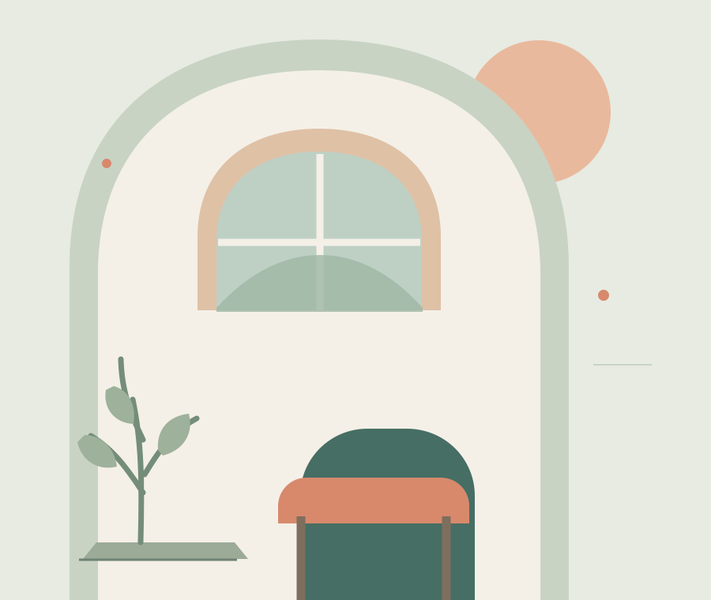

Zuhören ohne Eile
Mit Offenheit und Respekt für das, was gerade wichtig ist.
Ein geschützter Raum zum Verstehen und Wachsen
Approbierter Kinder- und Jugendlichenpsychotherapeut in Waiblingen. Verhaltenstherapie für Kinder, Jugendliche und junge Erwachsene – mit Zeit zum Zuhören, Raum für neue Perspektiven und Einbezug der Familie.

Wenn Sorgen, Konflikte oder Veränderungen den Alltag schwer machen, kann ein gemeinsamer Blick darauf entlasten. In einer psychotherapeutischen Behandlung schaffen wir Orientierung und suchen Schritt für Schritt nach hilfreichen Wegen.
Wie eine Behandlung konkret aussieht, richtet sich immer nach dem Anliegen, dem Alter und der individuellen Situation.
Mit Offenheit und Respekt für das, was gerade wichtig ist.
Zusammen schauen wir auf Belastungen, Ressourcen und Zusammenhänge.
Ziele und nächste Schritte entstehen im Gespräch miteinander.
Kai Läpple · Jahrgang 1996 · M.A. Sozialpädagogik
Im Oktober 2026 erhielt ich meine Approbation als Kinder- und Jugendlichenpsychotherapeut. Ich arbeite verhaltenstherapeutisch. Dabei interessiert mich nicht nur das einzelne Anliegen, sondern auch der Alltag und das Umfeld eines jungen Menschen. Mein Studium der Sozialpädagogik und meine Erfahrungen in pädagogischen und internationalen Arbeitsfeldern prägen diesen Blick. Wichtig ist mir, aufmerksam zuzuhören und gemeinsam passende nächste Schritte zu finden.
Ich arbeite gemeinsam mit meiner Mutter Dietgard Läpple in einer Gemeinschaftspraxis. Sie ist Psychologische Psychotherapeutin. Uns ist wichtig, Kindern, Jugendlichen und ihren Familien mit Offenheit und Respekt zu begegnen und sie auf ihrem Weg zu begleiten.
Kassenärztliche Vereinigung Baden-Württemberg (KVBW)
Landespsychotherapeutenkammer Baden-Württemberg (LPK BW)
Deutsche PsychotherapeutenVereinigung (DPtV)
Deutsche Gesellschaft für Verhaltenstherapie (DGVT)
Fachliche Ausbildung, pädagogische Praxis und Begegnungen über Ländergrenzen hinweg.
Verhaltenstherapie · Stuttgarter Zentrum für Verhaltenstherapie
Eberhard Karls Universität Tübingen
Schwerpunkt Sozialpädagogik · Eberhard Karls Universität Tübingen
Empirische Bildungsforschung · Hector-Institut, Tübingen
Praxissemester bei AESCO · Valencia
Europäischer Freiwilligendienst · Taller d’Art, Cultura i Creació · Barcelona
Deutsch · Muttersprache
Englisch & Spanisch · sehr gute Kenntnisse
Verhaltenstherapie in Waiblingen
Ich begleite Kinder, Jugendliche und junge Erwachsene. Häufige Anliegen sind zum Beispiel Ängste, depressive Beschwerden, Schulvermeidung, Zwänge, ADHS, Trauer und Belastungen nach Trennung. Ob eine ambulante Psychotherapie passend ist, klären wir gemeinsam.
Verhaltenstherapie bedeutet bei Kindern oft, mit Gesprächen, Spiel und altersgerechten Übungen herauszufinden, was Belastungen aufrechterhält und was im Alltag helfen kann. Eltern und andere Bezugspersonen beziehe ich – passend zum Alter und Anliegen – in die Behandlung ein. Gespräche und Therapie sind auf Deutsch, Englisch oder Spanisch möglich.
Behandlungen sind für gesetzlich Versicherte, Privatversicherte und Selbstzahlende vorgesehen. Die konkreten Abrechnungswege und eine mögliche Kostenübernahme klären wir vor Behandlungsbeginn.
Freie Plätze und aktuelle Wartezeiten können Sie telefonisch oder per E-Mail erfragen. Bei dringendem Bedarf helfen die 116 117 und die genannten Krisenangebote weiter.
In der psychotherapeutischen Sprechstunde schauen wir gemeinsam auf das Anliegen und klären, welche Unterstützung infrage kommt. Bei gesetzlicher Richtlinientherapie sind mindestens 50 Minuten Sprechstunde vorgesehen; bei Kindern und Jugendlichen sind bis zu 250 Minuten je Krankheitsfall möglich.
In zwei bis sechs probatorischen Sitzungen lernen wir uns kennen und prüfen, ob die Zusammenarbeit passt. Ziele und nächste Schritte werden gemeinsam besprochen.
Eltern oder andere Bezugspersonen werden passend zu Alter und Situation einbezogen. Mit Jugendlichen bespreche ich transparent, was vertraulich bleibt und wann Unterstützung durch Erwachsene wichtig ist.
Eine Behandlung beginnt mit Orientierung. Wir besprechen gemeinsam, was möglich und hilfreich ist.
Sie erreichen mich telefonisch oder per E-Mail. Bitte senden Sie über unverschlüsselte E-Mail keine vertraulichen Gesundheitsdaten.
Wir klären gemeinsam, ob eine behandlungsbedürftige psychische Belastung vorliegt und welcher nächste Schritt helfen kann.
Bei Kindern und Jugendlichen sind zwei bis sechs probatorische Sitzungen möglich. Danach entscheiden wir gemeinsam über eine Behandlung.
Fragen sind willkommen
Vielleicht fragen Sie sich, ob Psychotherapie gerade das Richtige ist, wie ein erstes Gespräch abläuft oder wie Jugendliche beteiligt werden. Diese Fragen können wir in einem persönlichen Erstkontakt besprechen.
Für Jugendliche: Du darfst eigene Fragen und Wünsche mitbringen. Wir besprechen gemeinsam, was vertraulich bleibt und wann Erwachsene einbezogen werden.
Gemeinschaftspraxis Läpple
Sie erreichen mich telefonisch oder per E-Mail. Bitte senden Sie über unverschlüsselte E-Mail keine vertraulichen Gesundheitsdaten.
Gemeinschaftspraxis mit meiner Mutter Dietgard Läpple, Psychologische Psychotherapeutin.